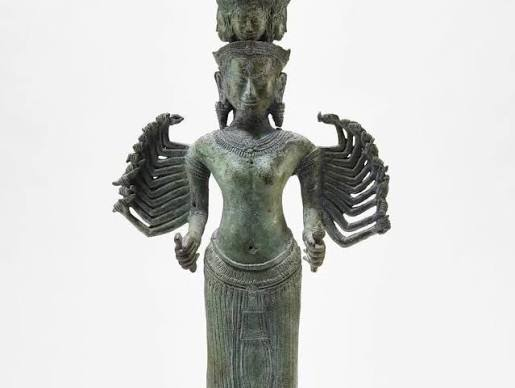

កម្មវិធីដំណើរទស្សនកិច្ចប្រាសាទបុរាណ
និងក្បួនដង្ហែទូកងមង្គល នៅកោះចិន
Ancient Temple Cultural Tour &
Auspicious Dragon Boat Procession at Koh Chen
បន្ទាប់ពីការពិសាអាហារថ្ងៃត្រង់ដ៏មហាសែនរីករាយរួចមក យើងខ្ញុំសូមអញ្ជើញភ្ញៀវកិត្តិយស និងញាតិមិត្តទាំងអស់ ចូលរួមដង្ហែនិងទស្សនា កម្មវិធីវប្បធម៌ប្រពៃណីដ៏អស្ចារ្យ ទៅកាន់ដែនដីប្រាសាទបុរាណនៃកោះចិន។
Following our joyful celebratory lunch, we cordially invite all distinguished guests, family, and friends to join and observe this grand traditional cultural procession to the historic domain of Koh Chen Ancient Temple.
⏱️ លំដាប់លំដោយកម្មវិធីការ (១២:០០ ថ្ងៃត្រង់ តទៅ)
១២:០០ ថ្ងៃ
ពិសាអាហារថ្ងៃត្រង់៖ ជួបជុំភ្ញៀវកិត្តិយស និងក្រុមការងារទាំងអស់ ពិសាភោជនាហារថ្ងៃត្រង់ជុំគ្នា ដើម្បីបង្កើនសាមគ្គីភាព និងត្រៀមថាមពល។
![[សូមភ្ជាប់រូបភាពពិសាអាហារថ្ងៃត្រង់ទីនេះ]](soma1.png)
០១:៣០ រសៀល
ក្បួនដង្ហែទូកងមង្គលទាំង ០៣៖ ចាប់ផ្តើមចេញដំណើរដង្ហែតាមផ្លូវទឹកយ៉ាងអធិកអធម ដោយមានចំណុះទូកទាំងអស់គ្រង «សម្លៀកបំពាក់បែបបុរាណ» អមដោយសំឡេង «ស្គរជ័យ និងការផ្លុំស្នែង» ញ៉ាំងបរិយាកាសឱ្យកាន់តែមានឫទ្ធីបារមីខ្លាំងក្លា ទៅតាមលំដាប់លំដោយជួរ៖
- 🛶 ទូកទី១ (អ្នកនាំផ្លូវ)៖ ទូកង មហានិគ្រោធតេជោសែនជ័យ
- 🛶 ទូកទី២ (កណ្តាល)៖ ទូកង កូនកំលោះ ហួកាំង ថារ៉ា
- 🛶 ទូកទី៣ (ក្រោយគេ)៖ ទូកង សាឯមសែនជ័យបារមីស្វាយជ្រុំ
![[សូមភ្ជាប់រូបភាពក្បួនទូកងបុរាណទីនេះ]](boat1.png)
០២:៣០ រសៀល
ពិធីបួងសួងព្រះនាងសូមា នៅប្រាសាទបុរាណ៖ ទៅដល់ទីតាំងប្រាសាទកោះចិន និងប្រារព្ធកិច្ច «បួងសួងសុំសិរីសួស្តីពីព្រះនាងសូមា» (មាតាធិបតីខ្មែរដំបូង) ព្រមទាំងមានការផ្លុំស្នែងជាកិច្ចកាត់ឆ្មាំ និងបើកទ្វារលាភជ័យ។

០៣:៣០ រសៀល
ការថតរូបអនុស្សាវរីយ៍រួមគ្នា៖ ជួបជុំគូស្វាមីភរិយាថ្មី ចំណុះទូកងទាំងឡាយ និងភ្ញៀវកិត្តិយសទាំងអស់ ថតរូបជាក្រុមជុំគ្នាទុកជាអនុស្សាវរីយ៍ និងការចងចាំដ៏មានន័យ។
![[សូមភ្ជាប់រូបភាពថតរូបជុំគ្នាទីនេះ]](temple1.png)
⏱️ Program Schedule (12:00 PM Onward)
12:00 PM
Lunch Gathering: Gathering of all honored guests, family, and team members to enjoy a festive lunch together, strengthening unity and recharging energy.
01:30 PM
Procession of 3 Auspicious Dragon Boats: The grand waterway procession commences with all boat crews dressed in «Traditional Attire», accompanied by the resonant echoes of «Victory Drums & Horn Blowing» to invoke prosperity, following this formation order:
- 🛶 1st Boat (Lead): Dragon Boat "Moha Nykroth Techo Sen Chey"
- 🛶 2nd Boat (Center): Dragon Boat "Groom Huokaing Thara"
- 🛶 3rd Boat (Rear): Dragon Boat "Sa-Em Sen Chey Baramey Svay Chrum"
02:30 PM
Queen Soma Blessing Ceremony at Ancient Temple: Arrival at Koh Chen Ancient Temple to conduct the «Blessing Ritual to Queen Soma» (The first sovereign mother of Khmer history), accompanied by ceremonial horn sounds to usher in prosperity and good fortune.
03:30 PM
Commemorative Group Photography: Gathering of the newlywed couple, dragon boat crews, and honored guests for a grand memorable group photo session.
📍 ទីតាំងប្រាសាទកោះចិន / Koh Chen Temple Location: